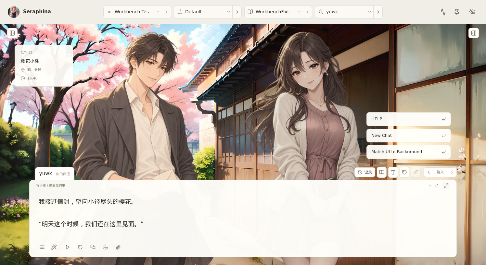

<!doctype html>
<html lang="zh-CN">
<meta charset="utf-8">
<meta name="viewport" content="width=device-width,initial-scale=1">
<title>RP · 双立绘实际效果</title>
<style>
:root{color-scheme:light;--paper:#f8f6f0;--ink:#39372f;--muted:#898174;--line:#ded9cd;--accent:#b76449}*{box-sizing:border-box}body{margin:0;background:var(--paper);color:var(--ink);font:13px/1.5 system-ui,sans-serif}header{height:52px;display:flex;align-items:center;justify-content:space-between;gap:16px;padding:0 20px;border-bottom:1px solid var(--line)}h1{margin:0;font-size:15px;font-weight:500}nav{display:flex;gap:5px}button{font:inherit;color:var(--muted);background:transparent;border:1px solid transparent;border-radius:7px;padding:6px 12px;cursor:pointer;transition:background .18s,border-color .18s,color .18s,transform .18s}button:hover{background:#efe8de}button:active{transform:scale(.97)}button[aria-pressed=true]{color:var(--accent);background:#eee3d7;border-color:#d6a48e}button:focus-visible,a:focus-visible{outline:2px solid var(--accent);outline-offset:3px}main{height:calc(100svh - 96px);display:grid;place-items:center;background:#eae7df}img{display:block;width:100%;height:100%;object-fit:contain;min-height:0;animation:appear .22s ease-out}footer{height:44px;display:flex;align-items:center;justify-content:space-between;gap:20px;padding:0 20px;color:var(--muted);font-size:12px}a{color:var(--accent);text-decoration:none}a:hover{text-decoration:underline}@keyframes appear{from{opacity:.25}to{opacity:1}}@media(max-width:760px){header{height:auto;min-height:80px;flex-direction:column;justify-content:center;gap:6px;padding:8px}nav{flex-wrap:wrap;justify-content:center}button{padding:5px 9px}main{height:calc(100svh - 140px)}footer{height:60px;padding:8px 12px;gap:8px}footer span{max-width:75%}}@media(prefers-reduced-motion:reduce){button,img{animation:none;transition:none}}
</style>
<header><h1>RP · 双立绘实际效果</h1><nav aria-label="查看不同状态"><button data-view="dialogue" aria-pressed="false">对白</button><button data-view="input" aria-pressed="true">输入</button><button data-view="expanded" aria-pressed="false">展开输入</button><button data-view="stage-only" aria-pressed="false">纯舞台</button><button data-view="compact" aria-pressed="false">1366 窗口</button></nav></header>
<main></main>
<footer><span>酒馆实际界面截图 · 复用沈砚与白芷立绘 · 临时会话演示，未保存聊天或设置</span><a href="../">设计稿 ↗</a></footer>
<script>
const picture=document.getElementById('effect');
document.querySelectorAll('nav button').forEach(button=>button.addEventListener('click',()=>{
 document.querySelectorAll('nav button').forEach(item=>item.setAttribute('aria-pressed',String(item===button)));
 picture.src=button.dataset.view+'.png'; picture.alt='酒馆实际 RP 界面：双立绘'+button.textContent+'状态';
 picture.style.animation='none'; requestAnimationFrame(()=>picture.style.animation='');
}));
</script>
</html>
